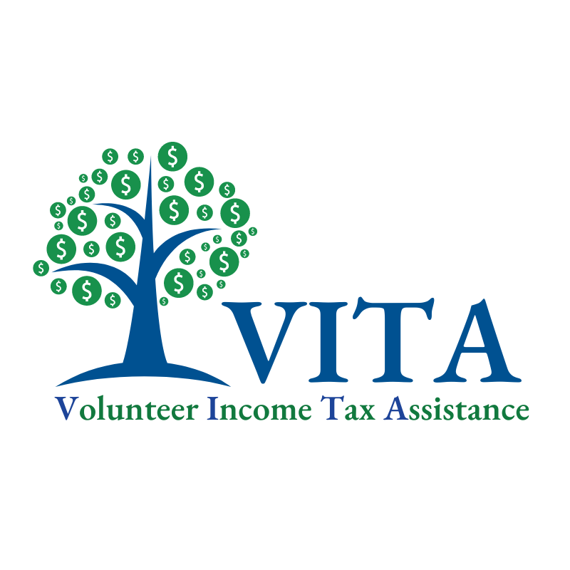
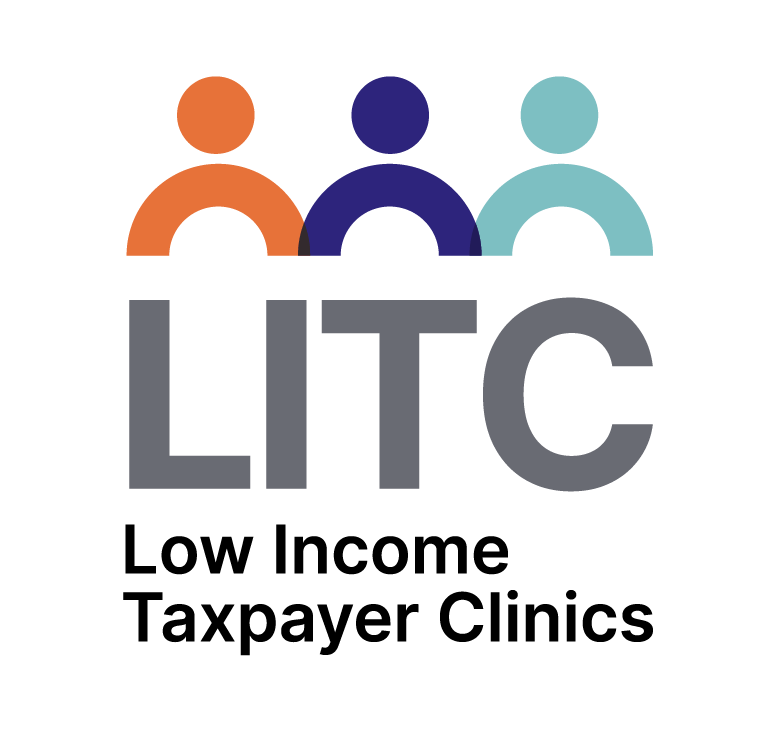

Get Free or Low-Cost Tax Help
Volunteer Income Tax Assistance

Free tax preparation for eligible taxpayers. Find sites using the IRS VITA locator.
VITA volunteers are trained and often certified to prepare basic returns and claim common credits like the EITC and CTC. Sites may offer assistance in multiple languages and can help with electronic filing.
Check eligibility rules before you go. Many VITA sites serve people who meet specific income limits or other criteria. Bring identification, Social Security numbers for dependents, and all income documents.
Low Income Taxpayer Clinic

Helps low-income taxpayers with audits, appeals, and disputes. Find local clinics on the IRS directory.
LITCs provide representation before the IRS and in U.S. Tax Court for eligible taxpayers who cannot afford private representation. Clinics also assist taxpayers with audits, collection matters, and other disputes.
Services are typically income-based and may focus on particular issues like identity theft, appeals, or installment agreements. Call ahead to confirm eligibility and required documents.
Community Partners
AARP Tax-Aide, United Way, and local nonprofits often provide seasonal assistance. Call early to schedule.
Tips for Visiting a Program
- Bring ID, Social Security numbers, W-2s, 1099s, and documentation for deductions.
- Confirm volunteer credentials and that returns are e-filed with an Electronic Filing Identification Number (EFIN).
- Schedule an appointment and arrive early.